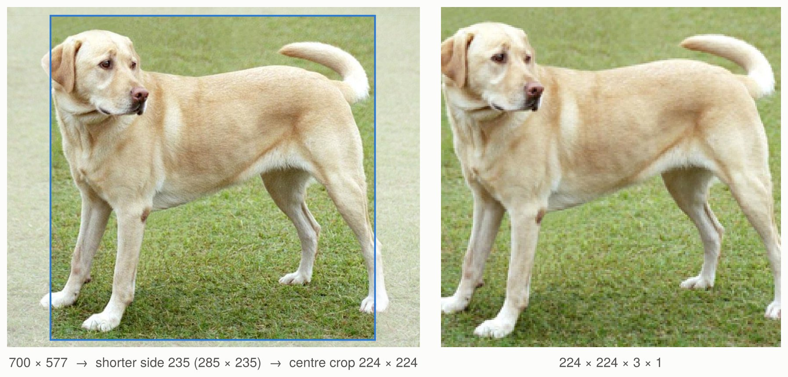
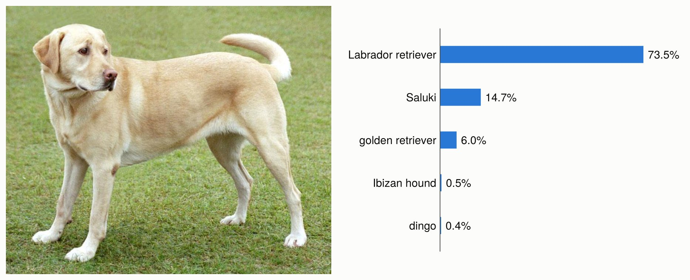
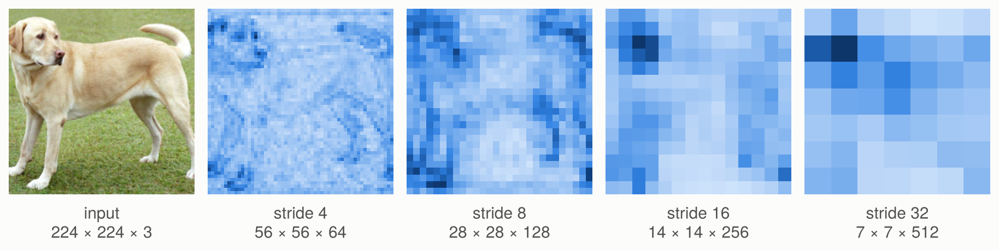
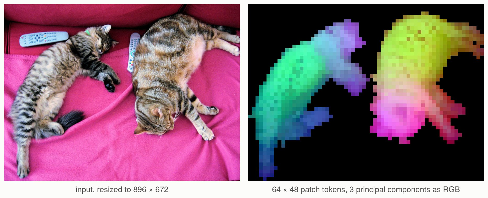

Working with vision models
This tutorial uses a pretrained ResNet to classify a photograph, extract image features, and learn a classifier for your own images. It then shows how to fine-tune the backbone and how a vision transformer's features differ from a convolutional network's.
Run the Julia blocks in order. The first model load downloads weights from the Hugging Face Hub; later loads use the cache. The dataset sections use your own photographs.
Set up
Install the packages of this tutorial in its Julia environment:
using Pkg
Pkg.add(["Metalhead", "Flux", "FileIO", "ImageIO", "ImageCore"])using Metalhead, Flux
using FileIO, ImageIO, ImageCore
using Downloads: download
using Random: seed!, shuffle!
using Statistics: mean
seed!(42)
repo = "timm/resnet18.a1_in1k"
model = create_model(repo)
transform = create_processor(repo)ResNet-18 is a convolutional neural network (CNN). Its successive stages reduce the spatial resolution and increase the number of feature channels. Global pooling turns the last feature map into one vector per image, and a linear classifier maps that vector to class scores. This checkpoint was trained for ImageNet's 1,000 classes. The model list links to its checkpoint and to other ported architectures.
Prepare a photograph
An image loaded by FileIO is a height × width matrix of colours. A Metalhead vision model takes a width × height × channels × batch array, prepared as the checkpoint was evaluated: resized, cropped and normalised. transform, the processor of the checkpoint, does both: it is timm's eval transform, with the settings of the checkpoint's configuration, which show prints with their source:
transform
# EvalTransform
# input_size = (3, 224, 224) config.json
# interpolation = "bicubic" config.json
# mean = (0.485, 0.456, 0.406) config.json
# std = (0.229, 0.224, 0.225) config.json
# crop_pct = 0.95 config.json
# crop_mode = "center" config.json
photo_url = "https://upload.wikimedia.org/wikipedia/commons/2/26/YellowLabradorLooking_new.jpg"
img = load(download(photo_url))
x = transform(img)
size(x) # (224, 224, 3, 1)input_size is in PyTorch order: channels, height, width. The transform resizes the shorter side of the image to floor(224 / 0.95) = 235 pixels with Pillow's bicubic filter, crops 224 × 224 pixels from the centre, scales the values to [0, 1] and normalises each channel with mean and std. The result is the input that timm computes from the same pixels as a PIL image, bit for bit, so that scores reproduce those of timm. (A JPEG decoded by ImageIO can differ slightly from Pillow's decoding of it.)

The example photograph, with the region that the transform keeps outlined, and the input of the model, x, with its normalisation undone. The getting started guide classifies the same photograph.

With ImageCore loaded, the transform turns the matrix of colours into the width × height × channels array that it works on, and the last dimension of x is a batch of one image. An array of that layout, of UInt8 from 0 to 255 or of reals from 0 to 1, works without ImageCore.
Classify the image
Models returned by create_model are in test mode: dropout is disabled and batch normalisation uses the stored statistics. A classifier returns logits, one column per image. Apply softmax over the class dimension to obtain probabilities:
logits = model(x)
size(logits) # (1000, 1)
probabilities = softmax(logits; dims = 1)
labels_url = "https://raw.githubusercontent.com/pytorch/hub/master/imagenet_classes.txt"
imagenet_labels = readlines(download(labels_url))
top5 = sortperm(vec(probabilities); rev = true)[1:5]
[(; label = imagenet_labels[i], probability = probabilities[i, 1]) for i in top5]
# Labrador retriever 0.735, Saluki 0.147, golden retriever 0.060, Ibizan hound 0.005, ...
The five most probable of the 1,000 ImageNet classes for the photograph, by timm/resnet18.a1_in1k.
Those labels match this checkpoint's ImageNet class order. When using a different dataset or checkpoint, use its label order. Softmax scores describe the model's prediction over its classes; an image from a new class still receives one of these labels.
To classify a batch, pass a vector of photographs, of any sizes:
images = [img, reverse(img; dims = 2)]
xbatch = transform(images)
size(model(xbatch)) # (1000, 2)Extract features
The same backbone can supply features to a new task. The interface separates the spatial features, the pooled embedding and the classifier:
spatial = forward_features(model, x)
embedding = forward_head(model, spatial; pre_logits = true)
reconstructed_logits = forward_head(model, spatial)
size(spatial) # (7, 7, 512, 1)
size(embedding) # (512, 1)
reconstructed_logits ≈ logits # trueEach column of embedding represents an entire image. A linear classifier can learn from these vectors while the backbone stays fixed. Spatial features preserve the image grid and are useful when a task needs positions as well as an image-level representation.
Train a classifier on your images
Arrange your labelled photographs into separate training and validation directories, with one subdirectory per class. For example:
data/
train/
daisy/
image1.jpg
...
rose/
image2.jpg
...
val/
daisy/
...
rose/
...Use different photographs in the two splits. The following helpers load JPEG or PNG files and build batches with a consistent class order:
function image_samples(root, classes)
return [(; path = joinpath(root, label, file), label)
for label in classes for file in sort(readdir(joinpath(root, label)))
if lowercase(splitext(file)[2]) in (".jpg", ".jpeg", ".png")]
end
function image_batch(samples, transform, classes)
x = transform([load(sample.path) for sample in samples])
y = Flux.onehotbatch([sample.label for sample in samples], classes)
return x, y
end
function embed_images(model, samples, transform, classes; batchsize = 8)
isempty(samples) && error("No images found")
chunks = map(collect(Iterators.partition(samples, batchsize))) do batch
x, _ = image_batch(batch, transform, classes)
return forward_head(model, forward_features(model, x); pre_logits = true)
end
y = Flux.onehotbatch([sample.label for sample in samples], classes)
return reduce(hcat, chunks), y
end
train_root, val_root = "data/train", "data/val"
classes = sort(filter(name -> isdir(joinpath(train_root, name)), readdir(train_root)))
train_samples = image_samples(train_root, classes)
val_samples = image_samples(val_root, classes)
train_z, train_y = embed_images(model, train_samples, transform, classes)
val_z, val_y = embed_images(model, val_samples, transform, classes)Keep the backbone in test mode while computing these embeddings. Caching the vectors means the training loop only runs the new classifier; it does not repeatedly run the images through ResNet. This is often called a linear probe:
head = Dense(size(train_z, 1) => length(classes))
loader = Flux.DataLoader((train_z, train_y); batchsize = 32, shuffle = true)
opt_state = Flux.setup(Adam(1e-3), head)
classification_loss(m, x, y) = Flux.logitcrossentropy(m(x), y)
for epoch in 1:10
Flux.train!(classification_loss, head, loader, opt_state)
predicted = Flux.onecold(head(val_z), classes)
expected = Flux.onecold(val_y, classes)
validation_accuracy = mean(predicted .== expected)
@info "Linear probe" epoch validation_accuracy
endlogitcrossentropy takes logits directly. The targets use the same classes order for training, validation and prediction. Only head is passed to the optimiser, so the pretrained backbone's weights stay fixed. See the Flux training guide for training loops, optimiser state and data loaders.
Fine-tune the backbone
To adapt the representation as well, create a pretrained model with a new classifier. Changing num_classes loads the backbone weights and initialises a classifier of the right size. Here the model is ResNet-18, whose classifier is the fc field, so we can copy in the linear probe we just trained:
tuned = create_model(repo; num_classes = length(classes))
Flux.loadmodel!(tuned.fc, Flux.state(head))
Flux.trainmode!(tuned)
opt_state = Flux.setup(Adam(1e-5), tuned)
for epoch in 1:3
shuffle!(train_samples)
for batch in Iterators.partition(train_samples, 8)
xb, yb = image_batch(batch, transform, classes)
Flux.train!(classification_loss, tuned, [(xb, yb)], opt_state)
end
end
Flux.testmode!(tuned)
xb, _ = image_batch(val_samples[1:1], transform, classes)
Flux.onecold(tuned(xb), classes)Fine-tuning uses image batches, because gradients must flow through the backbone. Switching to train mode enables dropout and batch-normalisation updates; switch back to test mode for validation and inference. Classifier field names differ between model families, so inspect the model before copying a head from another architecture.
The examples run on the CPU. To train on a GPU, move the model and every input and target batch to the same device before setting up its optimiser; see the Flux GPU guide.
Use a backbone for dense prediction
Segmentation and detection heads commonly combine features at several resolutions. feature_info describes the taps, and forward_intermediates returns their tensors:
info = feature_info(model)
maps = forward_intermediates(model, x; indices = 2:5, intermediates_only = true)
[(; channels = f.num_chs, reduction = f.reduction, shape = size(y))
for (f, y) in zip(info[2:5], maps)]For ResNet-18 and a 224 × 224 input, these maps have shapes 56 × 56 × 64 × batch, 28 × 28 × 128 × batch, 14 × 14 × 256 × batch and 7 × 7 × 512 × batch. They are backbone features; segmentation or detection needs a task-specific head and training data.

The four maps of ResNet-18 for the photograph: at each position, the norm of its feature vector, from light (small) to dark (large), each map on its own scale. Each map has half the width and height of the previous one, and twice its channels.
Collections of indices use 1-based positions in feature_info. An integer k selects the last k taps. Use stop_early = true to stop at the last requested tap. The getting started guide lists the supported families and their tap conventions.
Vision transformers return tokens
A vision transformer (ViT) divides the image into patches and processes a sequence of patch embeddings. Its forward_features returns channels × tokens × batch, rather than a CNN's spatial grid. This randomly initialised tiny ViT illustrates the shapes:
vit = create_model("vit_tiny_patch16_224")
tokens = forward_features(vit, x)
size(tokens) # (192, 197, 1): 196 patches and one class token
grid = only(forward_intermediates(vit, x; indices = 1, norm = true,
intermediates_only = true))
size(grid) # (14, 14, 192, 1)forward_intermediates removes prefix tokens when it reshapes patches into a spatial map. With output_fmt = "NLC" it keeps patch tokens as channels × tokens × batch; with return_prefix_tokens = true it also returns the prefix tokens separately. The integer indices = 1 above selects the last transformer block.
For useful pretrained embeddings, load a ViT checkpoint, create_model(repo), and prepare its images with its processor, create_processor(repo). DINOv2, CLIP and SigLIP variants have different pooling and prefix-token conventions; forward_head(...; pre_logits = true) applies the model's own pooling to its final features.
The patch features of DINOv2
DINOv2, trained without labels, gives patch features that tell objects and their parts apart. With dynamic_img_size = true, a ViT takes images of any size that is a multiple of its patch size. Here a photograph of 640 × 480 pixels is resized to 896 × 672, which DINOv2's patches of 14 pixels cut into a grid of 64 × 48:
using LinearAlgebra: svd
repo = "timm/vit_small_patch14_reg4_dinov2.lvd142m"
dinov2 = create_model(repo; dynamic_img_size = true)
transform = create_processor(repo; input_size = (3, 672, 896)) # channels, height, width
cats = load(download("http://images.cocodataset.org/val2017/000000039769.jpg"))
y = only(forward_intermediates(dinov2, transform(cats); indices = 1, norm = true,
intermediates_only = true)) # 64 × 48 × 384 × 1
X = reshape(y, :, size(y, 3)) # 3072 patches × 384 features
X = X .- sum(X; dims = 1) ./ size(X, 1)
pcs = X * svd(X).V[:, 1:3] # the first three principal components of each patch
The patch features of DINOv2 for a photograph of COCO. The first principal component separates the cats from the background, in black; the first three components of the patches of the cats, as red, green and blue, show their parts. The code of this figure and the others is in docs/figures/make_figures.jl.